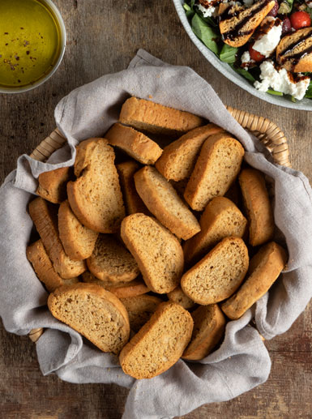

Paksimadia (Greek-style olive oil rusks)

Description
Double baked for extra crispiness, these go great in Greek salad, or with feta cheese and olive paste, or even on their own (for indulgent savants).
Ingredients
- 220g water
- 8g dry yeast (1 sachet)
- 10g granulated sugar
- 100g olive oil (+extra for the bowl)
- 400g all-purpose (plain) flour
- 100g whole wheat flour
- salt
Method
- In a mixer's bowl add the water, yeast, sugar, and whisk them well.
- Add the olive oil, whole-wheat flour and plan flour, and beat the mixture with the hook attachment at low speed for 5-6 minutes.
- Add salt 30 seconds before the end, and keep beating until the dough pulls away from the sides of the bowl.
- Grease a large bowl and put the dough in.
- Cover the bowl with cling film and set aside in room temperature, until the dough rises and doubles in size.
- Put the dough on your working surface and cut in half.
- Stretch out each dough piece with your hands and shape it into a roll. The thicker your roll, the bigger the rusks will come out.
- Line a baking pan with oven paper and place the dough pieces on it.
- Using a knife, score the top surface of the dough, creating vertical lines at equal distances.
- Allow the dough rolls to rise for another 30 mins.
- Preheat the oven to 170 degrees Celsius (fan)
- Bake the rusks for 25 minutes.
- Remove from the oven and allow the rusks to cool well.
- Preheat the oven again to 170 degrees Celsius (fan)
- Cut the rusks at the scored lines and bake them for another 25-30 minutes until golden and crispy.
- Remove from the oven. Serve in a bowl with spinach, cherry tomatoes, capers, olives, olive oil, salt, pepper, cream cheese and balsamic cream.